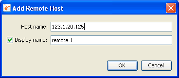
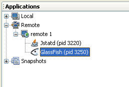

Работа с удалёнными приложениями
VisualVM (средство VisualVM) может получать и отображать данные о приложениях, выполняющихся на удалённых узлах. После подключения к удалённому узлу VisualVM может показывать общие сведения о среде выполнения приложения и наблюдать за кучей памяти и активностью потоков.
Примечание. VisualVM может получать сведения мониторинга удалённых приложений, но не может профилировать удалённые приложения.
Подключение к удалённому узлу
Подключённые удалённые узлы отображаются как узлы под узлом Remote (удалённые) в окне Applications (приложения). Когда вы подключены к удалённому хосту, VisualVM показывает выполняющиеся на нём приложения как вложенные узлы и автоматически обновляет состояние удалённых приложений: удаляет приложения, когда они останавливаются, и добавляет приложения, когда они запускаются.
Чтобы добавить удалённый узел, щёлкните правой кнопкой узел Remote (удалённые) в окне Applications (приложения), выберите Add Remote Host (добавить удалённый узел) и введите имя хоста или IP-адрес в диалоговом окне Add Remote Host (добавить удалённый узел). (Можно также задать отображаемое имя, которое будет использоваться для обозначения хоста в списке под узлом Remote.)

Примечание: чтобы получать и отображать сведения о приложениях на удалённом хосте, на удалённом хосте должна быть запущена утилита jstatd. Чтобы запустить утилиту jstatd, введите jstatd в командной строке. Утилита jstatd входит в состав JDK (Java Development Kit, комплект разработки Java) версии 6. Подробнее о jstatd см. в следующем документе:
Когда VisualVM подключён к удалённому хосту, узел этого хоста появляется под узлом Remote (удалённые) в окне Applications (приложения). Узел удалённого хоста можно развернуть, чтобы увидеть приложения, выполняющиеся на удалённом хосте.

Просмотр данных приложения
VisualVM отображает данные о каждом выполняющемся удалённом приложении на отдельной вкладке в главном окне. Чтобы открыть вкладку приложения, щёлкните правой кнопкой узел приложения в окне Applications (приложения) и выберите Open (открыть). (Либо дважды щёлкните узел приложения.) После выбора Open в главном окне открывается вкладка Overview (обзор) вкладки приложения.

На вложенных вкладках вкладки приложения можно просматривать подробности о приложении.
Подробнее см. в следующих документах:
- Просмотр обзора приложения
- Мониторинг приложения
- Мониторинг потоков приложения
- Явное подключение к агентам JMX (Java Management Extensions)